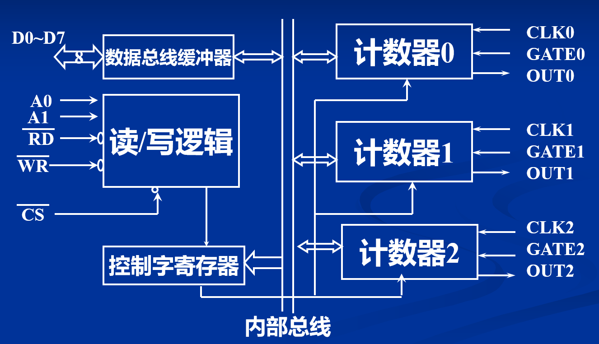
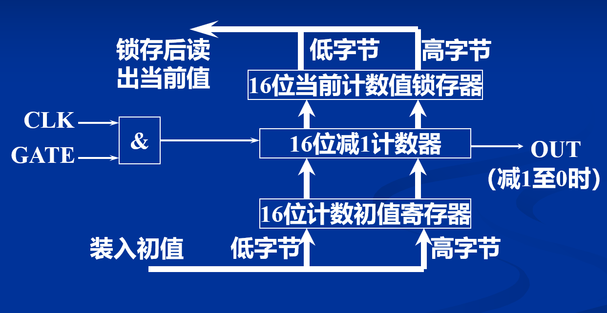
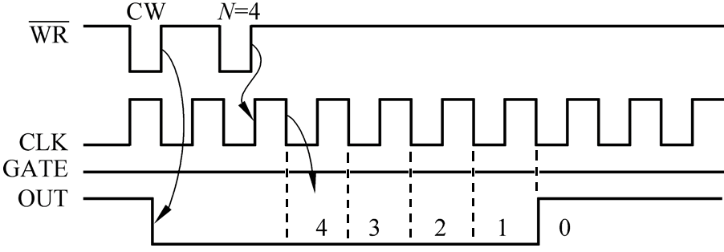
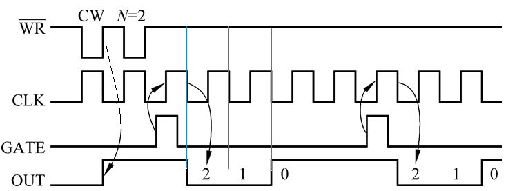
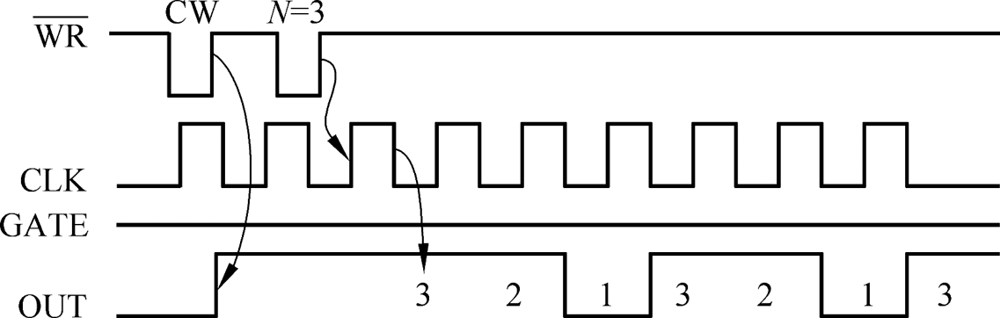
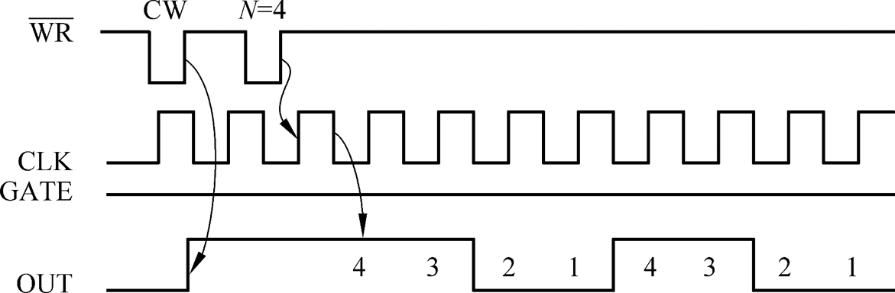
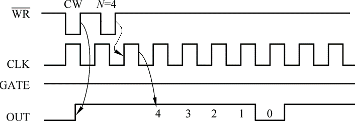
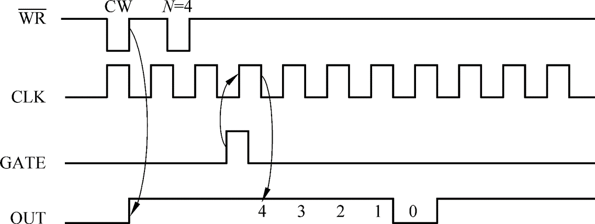
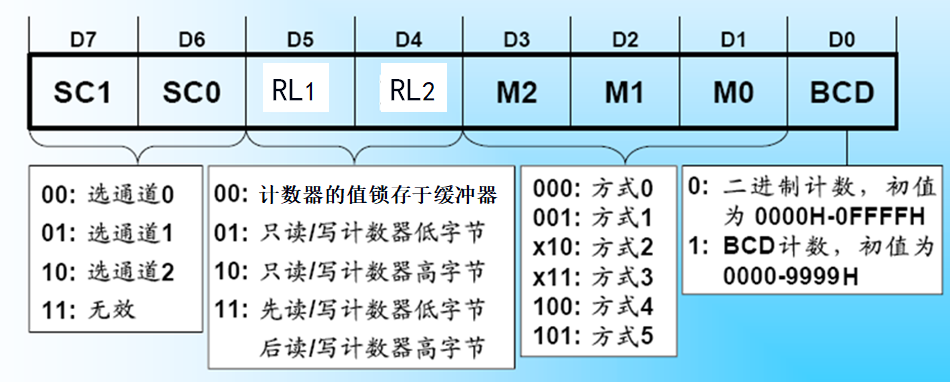
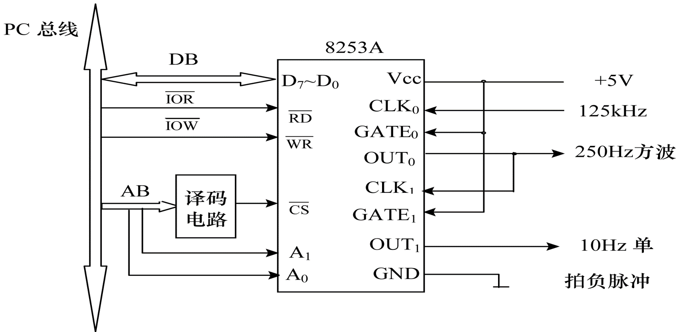

8253
本文最后更新于：January 1, 2023 pm
8253
8253芯片是可编程计数器/定时器。8253内部有三个计数器，分别称为计数器0、计数器1和计数器2，他们的结构完全相同。
8253的功能与结构
功能
8253的主要功能:
- 计数器
- 定时器(计数脉冲是已知周期的时钟信号)
- 频率发生器
- 方波发生器
结构


8253结构较为简单，从编程者的角度来看是常规IO端口，由信号控制片选，A1A0选择计数器即可，然后直接使用in或out指令操作。
8253的工作方式
对于8253，需要着重了解其6种工作方式，每种方式都有特殊的应用。
方式0: 计数结束中断
功能: 经过计数初值个时钟周期后out变为高电平

工作流程:
- 写入控制字后OUT变低电平
- 写入计数初值后的一个CLK的下降沿，计数初值被装入计数器，然后在每个CLK的下降沿做减1计数
- 当计数到0时OUT输出变为高电平
注意事项:
- GATE为高电平时，计数器工作，为低电平时停止计数
- 在计数过程中若重新写了新的计数初值，则按新值重新工作
- 每写一次计数初值只计数一个计数周期(不会重复)
方式1: 可重复触发的单稳态触发器
功能: 作为GATE信号触发的单稳态触发器

工作流程:
- 写入控制字后OUT变高电平
- 当GATE信号出现上升沿时，在CLK的下降沿装入计数初值，OUT变低电平，开始计数，在每个CLK的下降沿做减1计数
- 当计数到0时OUT输出变为高电平
注意事项:
- GATE出现上升沿时，装入计数初值
- 在计数过程中若再次出现GATE上升沿，则按计数初值重新计数
- 计数完成后GATE信号再次出现上升沿则重复工作(相同计数初值无需重新写入)
方式2: 频率发生器
功能: 可输出连续负脉冲周期波形，即可做分频器

工作流程(软件触发):
- 写入控制字后OUT变高电平
- 写计数初值后的一个CLK的下降沿，初值被装入计数器，然后对每个CLK的下降沿减1计数
- 计数期间OUT保持为高，当计数到1时OUT输出宽度为1个CLK周期的负脉冲，然后重新装入计数初值开始计数
注意事项:
- 计数中重写计数初值，则下次计数周期才会以新值开始计数(必须完成一次完整计数)
- 软件触发的情况下，会自动重复工作(会自动重新装入计数初值)
- 软件触发要求GATE信号始终为高电平
- 硬件触发流程: 写控制字和计数初值时GATE为低，当其变高后的下一个CLK下降沿计数器装入初值，后面每个CLK下降沿计数
方式3: 方波发生器
功能: 可输出连续方波周期波形，也可做分频器

工作流程(软件触发):
- 写入控制字后OUT变高电平
- 写计数初值后的一个CLK的下降沿，初值被装入计数器，然后对每个CLK的下降沿减1计数
- 计数期间占空比为1:1的方波，然后重新装入计数初值开始计数，周期为
注意事项:
- 方式3与方式2基本相同，区别在于输出波形
- 若计数初值为偶数，则OUT输出是高低电平对称的方波
- 若计数初值为奇数，则OUT输出不对称，前面的高比后面的低多1个CLK周期，即近似方波
- 计数中重写计数初值，则下次计数周期才会以新值开始计数(必须完成一次完整计数)
- 软件触发的情况下，会自动重复工作(会自动重新装入计数初值)
- 软件触发要求GATE信号始终为高电平
方式4: 软件触发选通(重写计数初值才能触发)
功能: 可输出单个负脉冲信号

工作流程(软件触发):
- 写入控制字后OUT变高电平
- 写计数初值后的一个CLK的下降沿，初值被装入计数器，然后对每个CLK的下降沿减1计数
- 计数期间OUT保持为高，当计数到0时OUT输出宽度为1个CLK周期的负脉冲
注意事项:
- 类似方式2的一个周期，但负脉冲输出推迟了一个CLK周期
- 在计数过程中若重新写了新的计数初值，则按新值重新工作
- GATE为高电平时，计数器工作，为低电平时停止计数
方式5: 硬件触发选通(GATE上升沿触发)
功能: 可输出单个负脉冲信号

工作流程(软件触发):
- 写入控制字后OUT变高电平
- GATE信号上跳的CLK的下降沿，初值被装入计数器，然后对每个CLK的下降沿减1计数
- 计数期间OUT保持为高，当计数到0时OUT输出宽度为1个CLK周期的负脉冲
注意事项:
- 功能与方式4完全相同，触发方式改为了GATE信号上升沿
- 在计数过程中若出现GATE上升沿，则重新装入计数初值工作
- 一次GATE触发只计数一个周期(不自动重复)
8253的控制字

8253的控制字也十分简单，只有一个，在确定工作方式和计数器初值后只需确定端口地址并将正确的控制字out出去即可。
8253的初始化
8253初始化方法分为2步:
- 向控制端口写入正确控制字(所有通道的控制字都写入同一个控制端口)
- 向对应计数器端口写入计数初值
注意: 计数初值写入的格式和顺序必须按控制字D5和D4规定的格式写入
初始化示例:
设计数器1工作于方式1，BCD码计数，计数初值为十进制4000。设端口地址为0E0H~0E3H。
则控制字为:
| 0 | 1 | 1 | 0 | 0 | 0 | 1 | 1 |
|---|---|---|---|---|---|---|---|
| 计数器1 | 只写高字节 | 方式1 | 十进制计数 | ||||
1 | |
8253的应用示例
多级分频器:
IBM/PC微型计算机的某扩展板上使用一片8253，其端口地址为400H～403H。要求从定时器0的输出端OUT0得到250Hz的方波信号，从定时器1的输出端OUT1得到10Hz的连续单拍负脉冲信号。已知系统提供的计数脉冲频率为125kHz，硬件连接如图所示，试编写初始化程序。

out0要求方波因此必须工作在方式3，out1要求单拍负脉冲因此必须工作在方式2。
计数初值:
- 计数器0:
- 计数器1:
控制字0:
| 0 | 0 | 1 | 1 | 0 | 1 | 1 | 1 |
|---|---|---|---|---|---|---|---|
| 计数器0 | 先写低位，再写高位 | 方式3 | 二进制计数 | ||||
| 0 | 1 | 0 | 1 | 0 | 1 | 0 | 1 |
|---|---|---|---|---|---|---|---|
| 计数器1 | 只写低位 | 方式2 | 二进制计数 | ||||
1 | |
本博客所有文章除特别声明外，均采用 CC BY-SA 4.0 协议 ，转载请注明出处！